UI UX Design / Motion
Picture Video Tool
A creator tool for turning knowledge-sharing articles into short video stories on Zhihu.
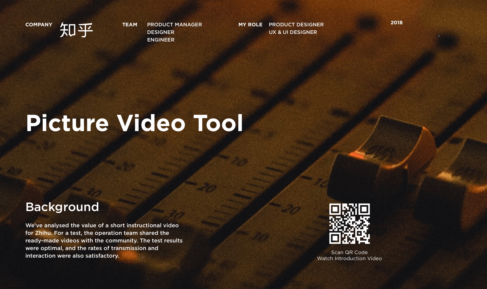
My Role: Senior Product Designer
Team: Product Manager, Designer(me), Engineer
Time: 2018
Zhihu is a Chinese knowledge sharing Q&A community where people can ask their own questions or share their insights about something. As an original content platform for creators to gather, Zhihu contains e-books, audio books, videos and columns in various formats.
Background
The development of the Internet has brought about a change in the form of content and the user's appeal is rapidly shifting from text to richer forms, with video being one of the major trends.
From the user's point of view, video is a more relaxed and receptive form compared to text. As a platform for creators, Zhihu has always aimed to "build a better platform for knowledge exchange". We hope to expand the format of Zhihu's content by adding video as the main carrier, ultimately helping creators to better reach their audience.
Through the development of a series of video features, the number of videos on the platform has greatly expanded, but we also found that the content of the videos did not match the tone of the platform, and users expressed dissatisfaction with such content.
Problem
After we developed and launched the video feature, users liked this new form of content, but we also found problems with the content of the videos not matching the tone of the platform, and users expressed dissatisfaction with such content.
What I did
- Quickly built the UX and UI of the video creation tool
- Conceived and produced a promotional video
- defined the users
- Competitor research
- MVP testing and improving
Motion Design
I created a promotional video for this new feature, which was used in conjunction with the community's operational activities to contribute to the overall video growth target.
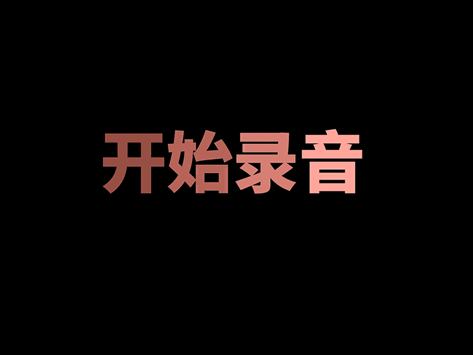
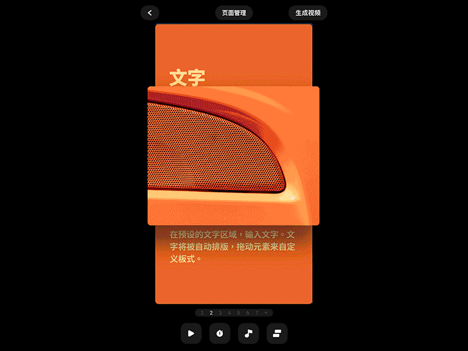
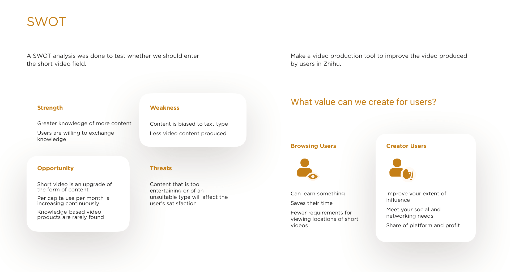
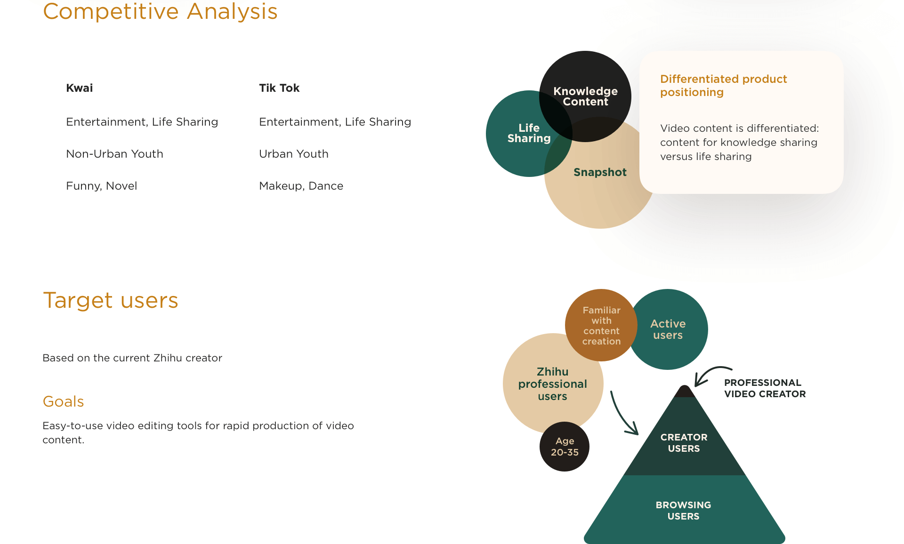
We also interviewed the best content creators in the community and built persona from there, who are often traditional graphic creators with solid manuscript content and backgrounds in specialist fields, but often without the experience and skills to produce video.
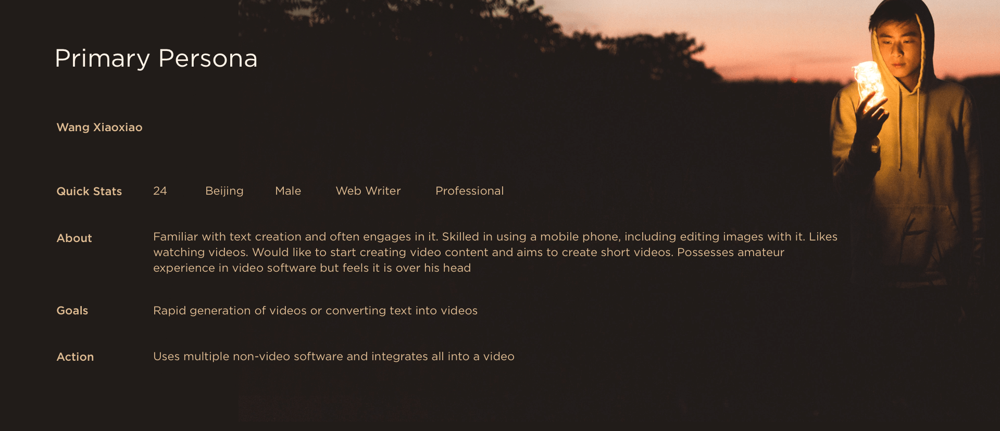
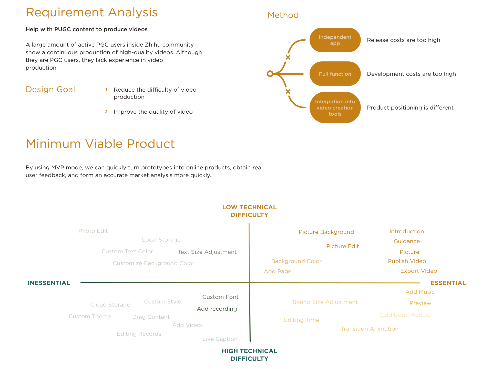
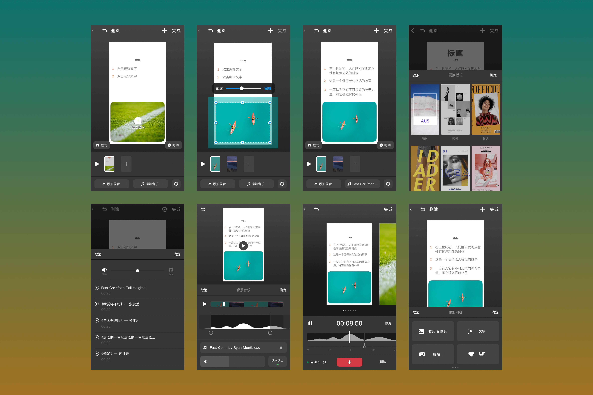
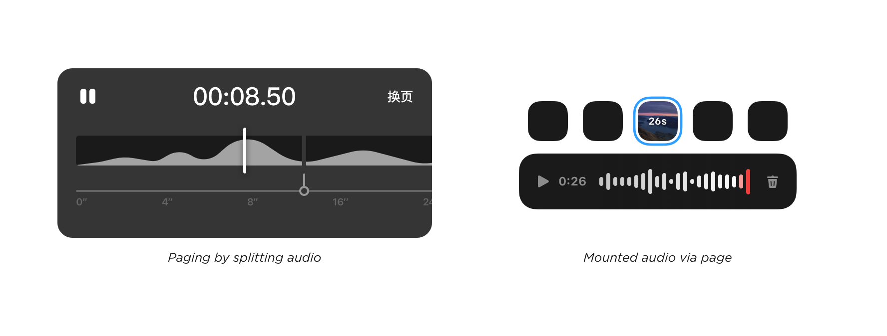
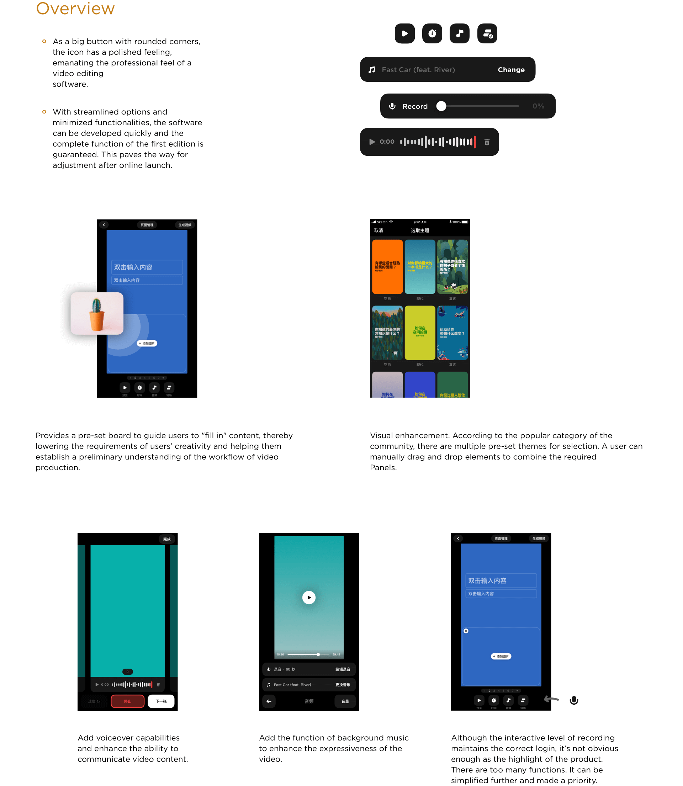
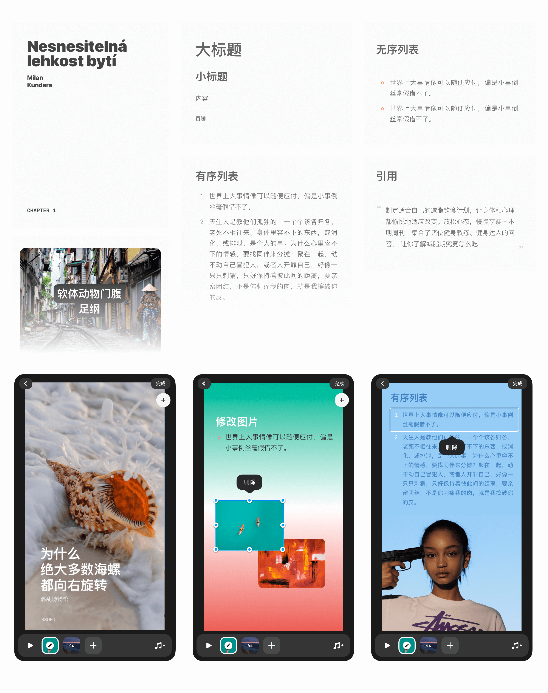
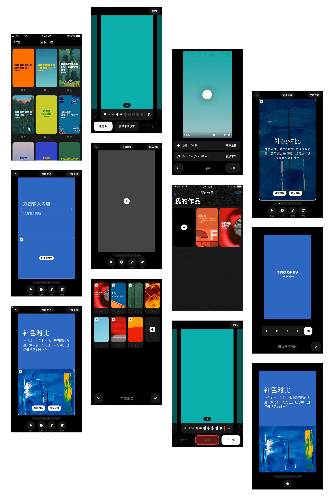